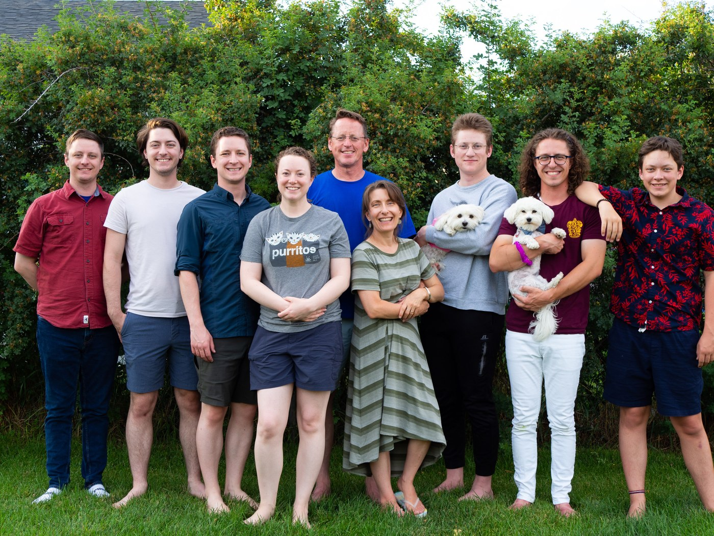
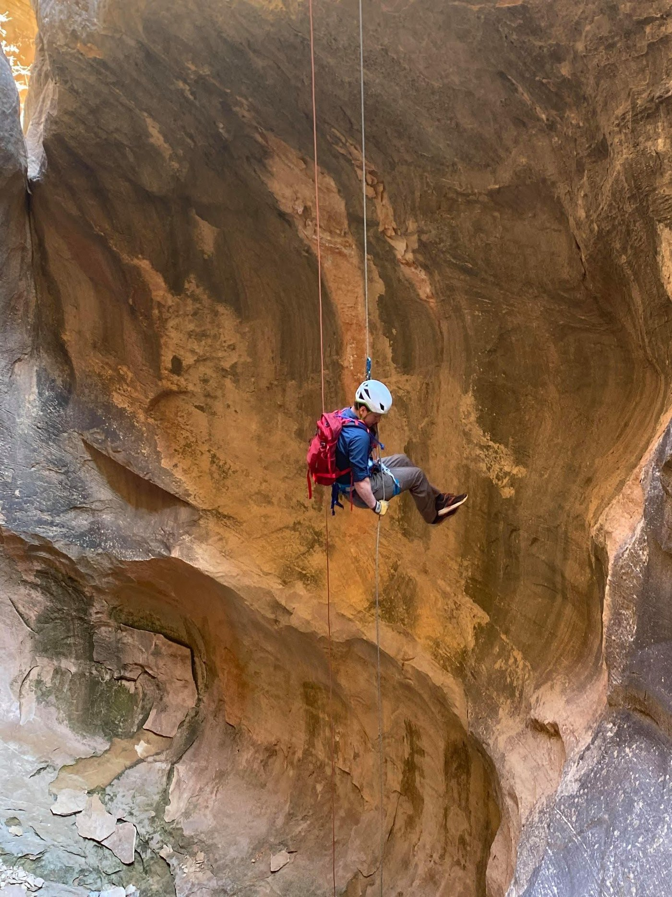

Joshua Wartena
Utah · Digital marketer · Cat dad
I grew up in a construction family, and I watched my dad treat every job and project like it was his own home. That's the approach I take with each client — a problem solved is shoes on the kids' feet and food on the table. I know it because those jobs were our shoes and our table. Too much is riding on your digital presence to not take it seriously, especially franchise owners and small-business owners.
A bit about me
The short version
I'm a digital marketing director based in Utah with 10+ years building programs for franchise groups, luxury resorts, and regional brands. I care about clean work, honest strategy, and helping business owners understand the real-world impacts of marketing and how they can influence their digital presence.
I've been married to my wonderful wife since 2013. We share our home with two cats who have very strong opinions about everything.
I've been married to my wonderful wife since 2013. We share our home with two cats who have very strong opinions about everything.

Outside of work
Triathlon
Weightlifting
Mountain biking
Climbing & canyoneering
Reading
When I'm not at a desk I'm outside or training — climbing, canyoneering, grilling, and triathlons. Lucky enough to live where mountain biking is the perfect way to spend a weekend.

Where I come from
Small business roots
I grew up in a household of 6 boys. Business wasn't abstract — it was the reason things worked out or didn't. My dad is a self-employed general contractor, and I worked with him since I was big enough to push a broom. We solved problems understanding that every decision had a real cost to the client. That perspective has never left me. Digital marketing does not need to be a mystery. There are real-world impacts to what you can do as an owner, and I'm here to help you understand so you can take control of what's at stake.